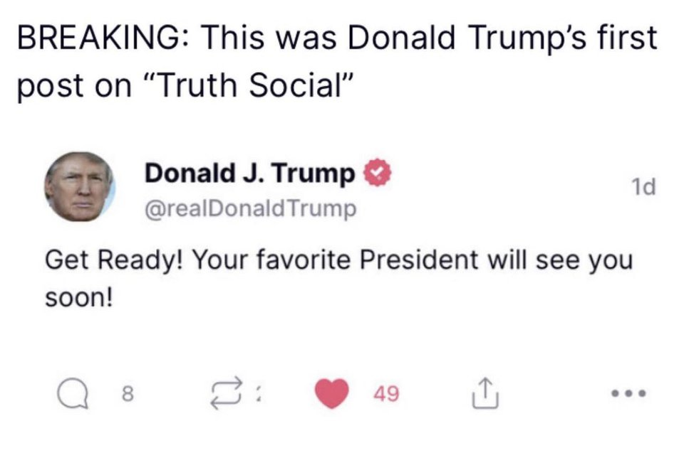
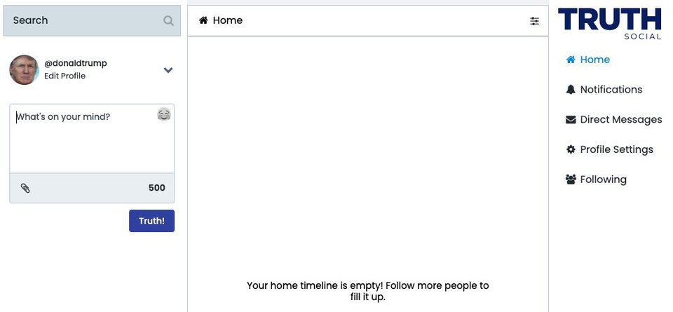

Nền tảng mạng xã hội của cựu Tổng thống Mỹ được nhận định giống như một phiên bản “nhái” của Twitter.
Donald Trump Jr., con trai cả của cựu Tổng thống Mỹ cho biết ông Trump vừa đăng bài viết đầu tiên trên mạng xã hội riêng của mình, TRUTH Social, vào ngày 15/2. Tuy nhiên, hiện ứng dụng vẫn chưa được chính thức công bố.
“Chuẩn bị sẵn sàng thôi nào! Vị tổng thống được các bạn yêu thích sắp trở lại rồi đây”, ông Trump viết trong bài đăng đầu tiên trên TRUTH Social.
Điều dễ thấy là giao diện TRUTH Social trông như một phiên bản “nhái” của Twitter, Mashable nhận định. Mọi thứ từ dòng trạng thái (tweet), đến những công cụ bình luận (reply), đăng lại (retweet), chia sẻ (share) và nút like đều giống hệt Twitter.
Trang cá nhân ở TRUTH Social trông cũng như một hồ sơ cá nhân trên Twitter. Điểm khác biệt lớn nhất giữa 2 mạng xã hội này có lẽ là ở cách đặt tên “Tweet” và “Truth”.
Một số người ủng hộ Trump cũng chia sẻ ảnh chụp màn hình bài viết của mình trên ứng dụng TRUTH Social. Rumble, dịch vụ chia sẻ video Trump đang sử dụng, cũng đăng tải hình ảnh cho biết nền tảng sẽ hỗ trợ nội dung video trên TRUTH Social.
Với một nền tảng còn chưa được công bố rộng rãi, TRUTH Social đã vướng phải nhiều tranh cãi đến từ dư luận. Mạng xã hội đã bị hack chỉ sau 2 tiếng vừa công bố bản dùng thử. Những “kẻ chơi khăm” này còn tạo một tài khoản giả mạo ông Trump và sử dụng nó để đăng những hình ảnh khiếm nhã trên mạng xã hội.
Sau khi ông Trump bị khóa tài khoản ở nhiều mạng xã hội lớn, những người ủng hộ ông đã chuyển sang nhiều ứng dụng khác như Parler, Gettr. Tuy nhiên, TRUTH Social là ứng dụng mà cựu Tổng thống Mỹ tự lập ra và quản lý.